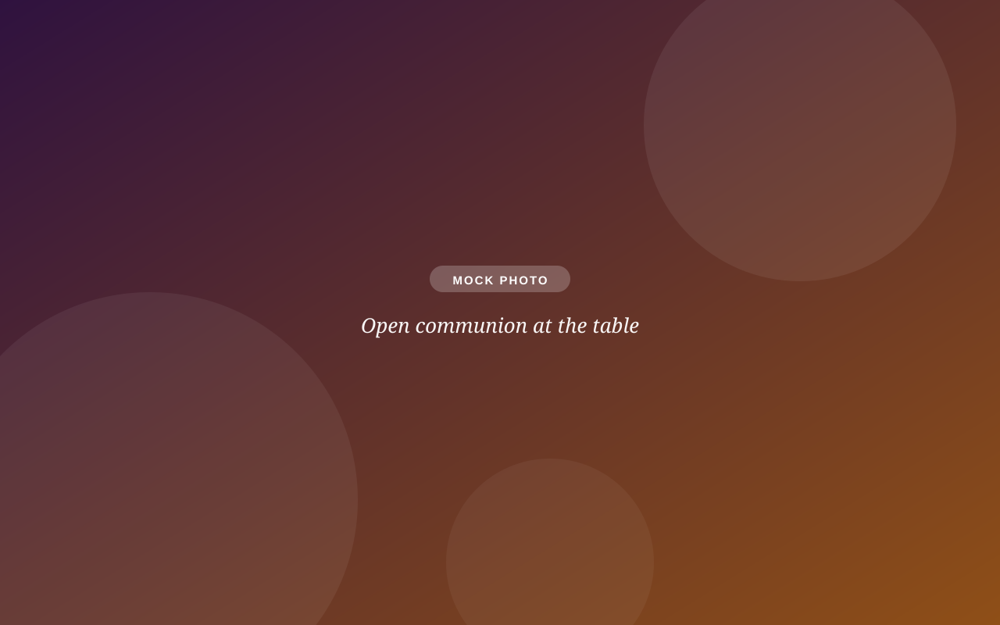
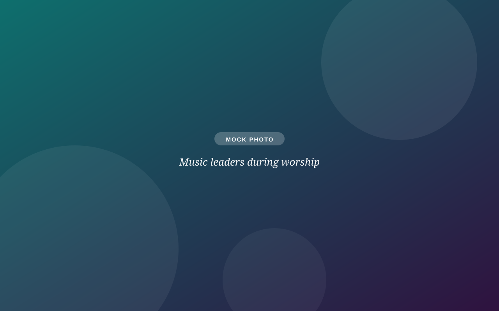

Music across traditions
Co-directors Vince Therrien and Mikal Garrett lead music that moves between beloved hymns, gospel, soul, and contemporary, often in the same service.
Worship with us
Scripture, honest preaching, prayer, open communion, and music that ranges from beloved hymns to gospel and soul, led by our two music co-directors. About an hour, every Sunday, in the sanctuary and on Zoom.

When we gather
Sunday Worship. Liturgy, music, children's message, sermon, prayer, and open communion. In the sanctuary and live on Zoom. About an hour.
In person + ZoomCoffee Hour. Coffee, treats, and unhurried conversation. The easiest place to meet people, and where Coffee Hour Buddies pairs kids with trained adult friends.
EveryoneCampfire Worship (June 10 – August 12). Fellowship meal at 6:30 (hot dogs and vegan options roasted over the fire), outdoor all-ages worship with communion at 7:00, s'mores at 7:30. Bring a side, a drink, or a lawn chair if you can.
OutdoorsDinner Church (school year; weekly in Lent). Food, conversation, scripture, communion, and service projects around shared tables. Church for people who connect better over a meal than in a pew.
All agesWord on Wednesday. Pastor-led Bible study on the coming Sunday's text. Coffee at 9:30. No homework, no prerequisites.
StudyWhat worship feels like
We're deeply rooted in the Lutheran expression of Christian faith, and we appreciate the wisdom of other traditions. Here's what that sounds and feels like on a Sunday.
Co-directors Vince Therrien and Mikal Garrett lead music that moves between beloved hymns, gospel, soul, and contemporary, often in the same service.
We take the Bible seriously, not literally. Sermons connect scripture to real life: doubt, joy, justice, and the everyday work of loving your neighbor.
Communion is for everyone: members, visitors, kids, skeptics. Bread, wine, grape juice, gluten-free wafers, and communion brought to your seat on request.
A children's message on the altar steps, the PrayGround for little ones, and worship bags. Children participate, not just attend.
We pray for the world as it actually is: our neighbors, our city, the sick and grieving among us, and the joys worth celebrating.
Advent, the Live Nativity, Lent's weekly Dinner Church, Easter, summer campfires: the church year gives the congregation its rhythm.
Current sermon series
"It is like fire shut up in my bones." (Jeremiah 20:9) A summer series about the Spirit-filled life: burning with joy, courage, and the awareness that God is at work in and through us.
Three rhythms run through the series: recognizing the fire, sharing the fire through our stories, and living the fire in everyday discipleship, connected to our congregational priorities of Experimenting Boldly and Neighboring as Practice.

Worship from anywhere
Snowstorm, illness, distance, social battery at zero: whatever the reason, you can worship with us without leaving home. Zoom worshippers are part of the congregation, not an audience.
Sundays at 9:30 AM. Cameras optional, pajamas undetectable, chat greetings encouraged.
Join the Zoom roomCatch up anytime. Full services and sermons are on our YouTube channel.
Browse recordingsFollow along with the order of worship, hymns, and announcements, emailed in our weekly update.
Get the weekly emailSundays at 9:30. Sit anywhere, sing if you want to, stay for coffee if you feel like it.